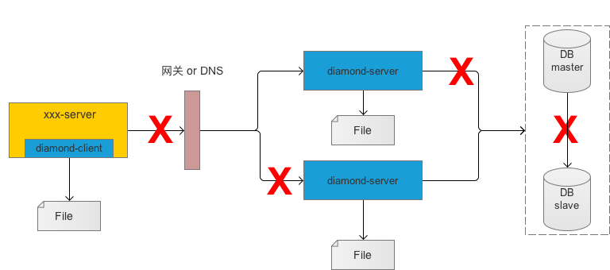

聊聊配置中心
Name : 王伟
Department : 智慧供应链
Email : hzwangwei6@corp.netease.com
配置中心必备的气质
高可用
高性能
高并发
环境隔离
动态生效
分布式系统的经典理论
CAP
BASE
分析几款配置中心
diamond
disconf
spring cloud config
diamond高可用

"简单工厂"
"简单工厂"的特点
静态方法
：
根据入参明确"产品"类型
：
增加新的"产品"需要修改工厂类的判断逻辑代码
：
"产品"数量影响工厂方法的复杂度
：
哪些场景适合使用"简单工厂"模式？
Thanks
Q/A
←
→
/
Go to slide: